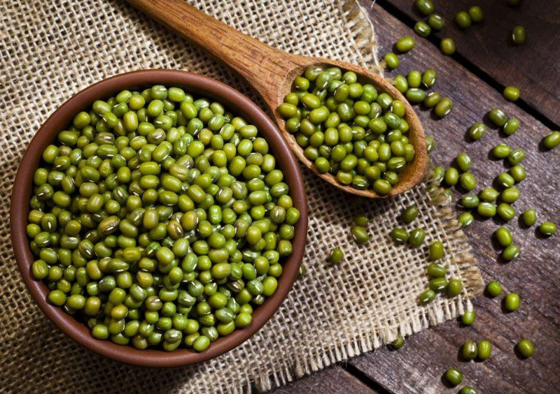

5 Loại đậu giúp tăng cân an toàn và hiệu quả
Đậu nành có lẽ là thực phẩm không còn quá xa lạ gì đối với chúng ta. Đây là một trong những loại thuộc họ nhà đậu giàu chất dinh dưỡng tốt cho sức khỏe và không tốn kém. Đậu nành có thể được sử dụng với nhiều cách khác nhau như đậu nành rang, sữa đậu nành, bột đậu nành,... Tất cả các loại vitamin, khoáng chất có chứa trong đậu nành không chỉ giúp tăng cân mà còn mang lại làn da khỏe, đẹp.
Trên đây là top 5 loại đậu tăng cân tự nhiên an toàn, hiệu quả dành cho những người có cơ thể gầy. Để quá trình tăng cân được diễn ra nhanh chóng và tối ưu nhất, thì bạn nên kết hợp tập thể dục và bổ sung các dưỡng chất cùng các loại đậu tăng cân hợp lý.